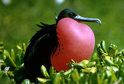
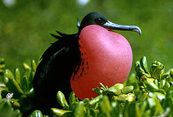

| Magnificent Frigatebird | |
|---|---|
|  | |
| Conservation status | |
| Binomial name | |
| Fregata magnificens Mathews, 1914 |
| Magnificent Frigatebird | |
|---|---|
|  | |
| Conservation status | |
| Binomial name | |
| Fregata magnificens Mathews, 1914 |
The Magnificent Frigatebird (Fregata magnificens) was sometimes previously known as Man O'War, reflecting its rakish lines, speed, and aerial piracy of other birds.
It is widespread in the tropical Atlantic, breeding colonially in trees in Florida, the Caribbean and Cape Verde Islands. It also breeds along the Pacific coast of the Americas from Mexico to Ecuador including the Galapagos Islands.
It has occurred as a vagrant as far from its normal range as the Isle of Man, Denmark, Spain, England, and British Columbia.
The Magnificent Frigatebird is 100 cm (39 inches) long with a 215 cm (85 inch) wingspan. Males are all black with a scarlet throat pouch which is inflated like a balloon in the breeding season. Although the feathers are black, the scapular feathers produce a purple iridescence when they reflect sunlight. Females are black, but have a white breast and lower neck sides, a brown band on the wings and a blue eye ring. Immature birds have a white head and underparts.
This species is very similar to the other frigatebirds and is similarly sized to all but the Lesser Frigatebird. However, it lacks a white axillary spur, and juveniles show a distinctive diamond-shaped belly patch.
The Magnificent Frigatebird is silent in flight, but makes various rattling sounds at its nest.
This species feeds mainly on fish, and also attacks other seabirds to force them to disgorge their meals. Frigatebirds never land on water, and always take their food items in flight.
They spend days and nights on the wing, with an average ground speed of 10 km/hour, covering 223±208 km before landing. They alternately climb in thermals, to altitudes occasionally as high as 2500 m, and descend to near the sea surface (Chastel et al. 2003). The only other bird known to spend days and nights on the wing is the Common Swift.
A recent study [1] that examined genetic and morphological variation in magnificent frigatebirds found both expected, and also highly unexpected results: Firstly - as predicted by the incredible flight capacity of the species - the authors found signatures of high gene flow across most of the distribution range. This included evidence of recent gene flow among Pacific and Atlantic localities, likely across the isthmus of Panama. This geological formation is a strong barrier to movement in most tropical seabirds. However, the same study also found that the magnificent frigatebird on the Galápagos Islands is genetically and morphologically distinct. Based on this study, the Galápagos population has not been exchanging any genes with their mainland counterparts for several hundred thousand years. This finding is a powerful testimony to the evolutionary uniqueness of the taxa inhabiting the Galápagos Islands and their associated marine ecosystems.

{kind=link}